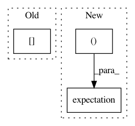

48270681afc13081094f7f398a1e194c6b07ba9b,gpflow/models/gplvm.py,BayesianGPLVM,_build_likelihood,#BayesianGPLVM#,105
Before Change
Construct a tensorflow function to compute the bound on the marginal
likelihood.
num_inducing = tf.shape(self.Z)[0]
psi0 = tf.reduce_sum(self.kern.eKdiag(self.X_mean, self.X_var), 0)
psi1 = self.kern.eKxz(self.Z, self.X_mean, self.X_var)
psi2 = tf.reduce_sum(self.kern.eKzxKxz(self.Z, self.X_mean, self.X_var), 0)
Kuu = self.kern.K(self.Z) + tf.eye(num_inducing, dtype=settings.float_type) * settings.numerics.jitter_level
After Change
num_inducing = len(self.feature)
psi0 = tf.reduce_sum(expectation(pX, self.kern))
psi1 = expectation(pX, (self.feature, self.kern))
psi2 = tf.reduce_sum(expectation(pX, (self.feature, self.kern), (self.feature, self.kern)), axis=0)
Kuu = self.feature.Kuu(self.kern, jitter=settings.numerics.jitter_level)
L = tf.cholesky(Kuu)
sigma2 = self.likelihood.variance
In pattern: SUPERPATTERN
Frequency: 4
Non-data size: 3
Instances
Project Name: GPflow/GPflow
Commit Name: 48270681afc13081094f7f398a1e194c6b07ba9b
Time: 2018-01-03
Author: dutordoirv@gmail.com
File Name: gpflow/models/gplvm.py
Class Name: BayesianGPLVM
Method Name: _build_likelihood
Project Name: GPflow/GPflow
Commit Name: d1ac7b831ad36cd0e4bdd7980819f83208345148
Time: 2018-02-07
Author: alex.ialongo@gmail.com
File Name: gpflow/expectations.py
Class Name:
Method Name: _expectation
Project Name: GPflow/GPflow
Commit Name: 48270681afc13081094f7f398a1e194c6b07ba9b
Time: 2018-01-03
Author: dutordoirv@gmail.com
File Name: gpflow/models/gplvm.py
Class Name: BayesianGPLVM
Method Name: _build_predict
Project Name: GPflow/GPflow
Commit Name: d1ac7b831ad36cd0e4bdd7980819f83208345148
Time: 2018-02-07
Author: alex.ialongo@gmail.com
File Name: gpflow/expectations.py
Class Name:
Method Name: _expectation